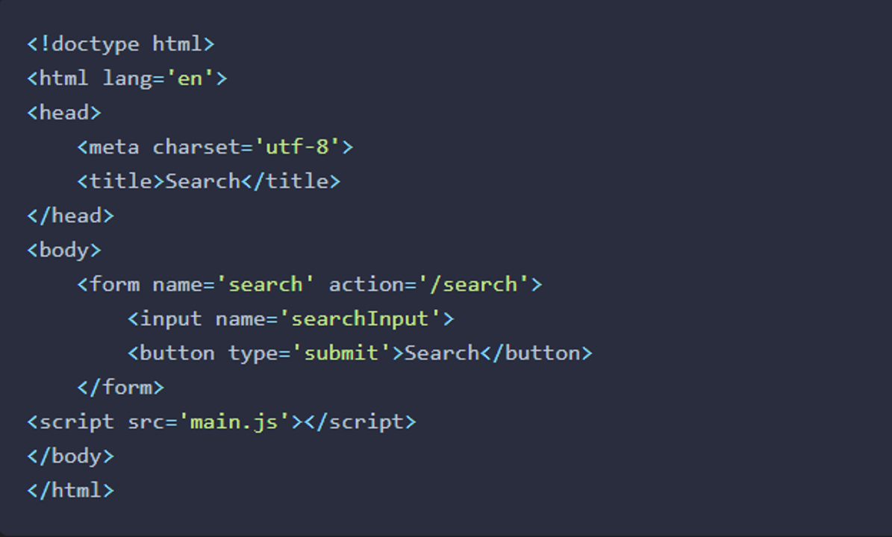

Questions
What is the most common way to access form elements in JavaScript? The chapter gave us a lot of options I just was curious to see whish is used the most.
Notes
Forms
Traditionally, when a form was submitted, it would be sent to a server where the information would be processed using a 'back end' language such as PHP or Ruby. It’s possible, and becoming more and more common, to process the information in a form on the 'front end' before it is sent to the server using JavaScript, which is what we’ll be focusing on in this chapter.
A Searching Example
We’ll start off with a simple example of a form that contains one input field, and a button to submit a search query, not unlike the one used by Google. This example doesn’t use any styles; you just need to create a file called search.html that contains the following code:
This form has a name attribute of search, and contains two controls: an input field where a user can enter a search phrase, and a button to submit the form. The form can also be submitted by pressing Enter. The action attribute is the URL that the form will be submitted to so it can be processed on the server side. The input field also has a name attribute of searchInput that is used to access the information inside it. You should also create a file called main.js to put the JavaScript in. This can be saved in the same directory as search.html.
Accessing the From Elements
const form = document.forms[0];
const form = document.getElementsByTagname('form')[0];
const form = document.forms.search;
const form = document.forms['search'];
const [input,button] = form.elements;
const input = form.searchInput
const input = form['searchInput']
Submitting a Form
Possibly the most important form event is the submit event, occurring when the form is submitted. Usually this will send the content of the form to the server to be processed, but we can use JavaScript to intercept the form before it’s sent by adding a submit event listener.
Form Controls
In our previous search example, we only used the input and button form controls. But there are others that can help to make our web pages more interactive. Some common types of form control are:
- (input) fields, including text, passwords, check boxes, radio buttons, and file uploads
- (select) menus for drop-down lists of options
- (textarea) elements for longer text entry
- (button) elements for submitting and resetting forms
Input Fields
- Text Input
- Password Input
- Checkbox Input
- Radio Button Input
- Hidden Input
- File Input
- Other Input Types
- Select Drop-Down List
- Text Areas
- Buttons
From Validation
Form validation is the process of checking whether a user has entered the information into a form correctly. Examples of the types of validation that occur include ensuring that:
- A required field is complete
- An email address is valid
- A number is entered when numerical data is required
- A password is at least a minimum number of characters
Validation can occur on the client side using JavaScript, and on the server side. It is advisable to use both client-side and server-side validation. JavaScript should not be relied upon to validate any data before it’s saved to a database. This is because it’s possible for a user to modify the JavaScript code and bypass the validation rules. It's also very easy to bypass the front-end completely and send arbitrary data to the application's backend. For these reasons, JavaScript validation should be used to enhance the user experience when filling in a form by giving feedback about any errors before it’s submitted. This should then be backed up with more validation performed on the server before the data is eventually saved to a database. Having said that, it’s still useful to validate on the client side even if the data will be validated again on the server side. This is because it will ensure that more valid data is sent to the server, which helps to cut down the number of HTTP requests required to send the form back and forward from the server to be corrected
Disabling the Submit Button
Another useful technique that can aid usability is to disable the submit button if there are errors on the form. If the submit button is disabled then no action is taken when it’s clicked. Most browsers will also display it in a lighter color to indicate that it cannot be clicked on. This prevents users from submitting a form containing any errors
Object-Oriented Programmng
Object-oriented programming is often used to model representations of objects in the real world. There are three main concepts in OOP: encapsulation, polymorphism and inheritance. I’m going to use my juicer to illustrate how each of these concepts can be applied in a programming environment, since the juicer can be considered an object. It’s a wonderful machine that makes fresh juice for me every morning. In many ways, my juicer can be thought of as an object, as it has properties such as speed and capacity, and also has methods or actions it can perform, such as juicing, switching on and switching off.
Encapsulation
When I use my juicer, I put the fruit into the machine, press the 'on' button and out comes the juice. I haven’t a clue how it does it—only that it makes a very loud noise! This demonstrates the concept of encapsulation: the inner workings are kept hidden inside the object and only the essential functionalities are exposed to the end user, such as the 'on' button. In OOP, this involves keeping all the programming logic inside an object and making methods available to implement the functionality, without the outside world needing to know how it’s done.
Polymorphism
My juicer isn't the only appliance I own that has an 'on' button, although the way the on button works is slightly different for each appliance. My juicer also uses the same electrical outlet as other appliances in my kitchen. I can also place various types of fruit into it and it still juices them. These examples demonstrate the concept of polymorphism: the same process can be used for different objects. In OOP, this means various objects can share the same method, but also have the ability to override shared methods with a more specific implementation
Inheritance
I’d really like the next model up from my juicer, as it can deal with more types of fruit and it’s a bit quieter. Even though it has these extra features, I’m sure that inside it uses many of the same parts that my juicer has. This demonstrates the concept of inheritance: taking the features of one object then adding some new features. In OOP, this means we can take an object that already exists and inherit all its properties and methods. We can then improve on its functionality by adding new properties and methods
Classes
Many object-oriented languages, such as Java and Ruby, are known as class-based languages. This is because they use a class to define
a blueprint for an object. Objects are then created as an instance of that class, and inherit all the properties and methods of the
class. In my juicer example, the juicer class would represent the design of the juicer, and each juicer that’s made on the production
line would be instances of that class.
JavaScript didn't have classes before ES6, and used the concept of using actual objects as the blueprint for creating more objects.
This is known as a prototype-based language. In the juicer example, this might involve building an actual prototype juicer then using
this prototype as the basis for making all the other juicers. The juicers based on the prototype would be able to do everything the
prototype could do, with some being able to do even more. Even though ES6 now supports classes, it still uses this prototypal
inheritance model in the background.
Consrtuctor Functions
This is a function that defines the properties and methods of an object. Here is the dice example rewritten as a constructor function:
const Dice = function(sides=6){
this.sides = sides;
this.roll = function() {
return Math.floor(this.sides * Math.random() + 1)br
}
}
The keyword this is used to represent the object that will be returned by the constructor function. In the previous example, we use it to set the sides property to the argument that is provided to the constructor function, or 6, if no argument is provided. It also adds a method called roll(), which returns a random number from 1 up to the number of sides the dice has. We can now create an instance of the dice constructor function using the new operator.
const redDice = new Dice();
>> Dice { sides: 6, roll: [Function] }
ES6 Class Declarations
ES6 introduced the new class declaration syntax that does exactly the same thing as a constructor function, but looks much similar to writing a class in a class-based programming language. Here is the dice example again, using a class declaration:
class Dice {
constructor(sides=6) {
this.sides = sides;
}
roll() {
return Math.floor(this.sides * Math.random() + 1)
}
}
The ES6 class declarations are preferable to the constructor function syntax because they are more succinct, easier to read and all code in a class definition is implicitly in strict mode, so doesn't need the 'use strict' statement. Using ES6 class declarations also avoids a number of pitfalls associated with constructor functions. For example, an error is thrown when trying to call a class constructor without using the new operator, whereas doing the same thing with a constructor function can cause a lot of problems that are hard to track down:
// Using constructor function - noDice is just set to undefined without any warning
const noDice = Dice();
noDice
>> undefined
// Using class - an error is thrown
const noDice = Dice();
>> TypeError: Class constructor Dice cannot be invoked without 'new'
The Constructor Property
All objects have a constructor property that returns the constructor function that created it:
blueDice.constructor
>> [Function: Dice]
We can use the constructor property to instantiate a copy of an object, without having to reference the actual constructor function or class declaration directly. For example, if we wanted to make another copy of the redDice object, but if the name of its constructor was unknown, we could use the following:
const greenDice = new redDice.constructor(10);
greenDice instanceOf Dice
>> true
Static Methods
The static keyword can be used in class declarations to create a static method. These are sometimes called class methods in other programming languages. A static method is called by the class directly rather than by instances of the class
Prototypal Inheritance
JavaScript uses a prototypal inheritance model. This means that every class has a prototype property that is shared by every instance of the class. So any properties or methods of a class’s prototype can be accessed by every object instantiated by that class
Prototype Property
When creating a class, you would normally add any default properties and methods to the class declaration. But what if you want to augment the class with extra methods and properties after it has been created? It turns out that you can still do this using the prototype property of the class. This is particularly useful if you don't have access to the class declaration, but still want to add properties and methods to the class.
What Should the Protoype Be Used For?
The prototype can be used to add any new properties and methods after the class has been declared. It should be used to define any properties that
will remain the same for every instance of the class. The weapon example was unsuitable because all the turtles use a different weapon (we just
used it in the example above to demonstrate overwriting). They do, however, like the same food — pizza! This makes a good candidate for a prototype
property, if it wasn't included in the original class declaration
To summarize, the following points should be considered when using classes and prototypes to create instances:
- Create a class declaration that deals with any initialization, shared properties and methods.
- Any extra methods and properties that need to be augmented to the class declaration after it’s been defined can be added to the prototype. These will be added to all instances, even those that have already been created.
- Add any properties or methods that are individual to a particular instance can be augmented using assignment to that object (a mixin could be used to add multiple properties at once, as we’ll see later).
- Be careful when overwriting the prototype completely ― the constructor class needs to be reset.
Public and Private Methods
By default, an object’s methods are public in JavaScript. Methods and properties are said to be public because they can be queried directly and changed
by assignment. The dynamic nature of the language means that an object’s properties and methods can be changed after it has been created.
In the example that follows, the Turtle() class has been modified to include a private _color property (some of the other properties and methods have also been removed for clarity):
class Turtle {
constructor(name,color) {
this.name = name;
let _color = color;
this.setColor = color => { return _color = color; }
this.getColor = () => _color;
}
}
The _color property is created as a variable inside the scope of the constructor function inside the class declaration. This makes it impossible to access outside of this scope. The getColor() and setColor() methods are known as getter and setter methods and they form a closure over this variable and provide controlled access to the property instead:
raph = new Turtle('Raphael','Red');
>> Turtle { name: 'Raphael', setColor: [Function], getColor: [Function] }
raph.getColor();
>> 'Red'
raph.setColor(4);
>> 4
In this example, things don't work much differently than before, except functions are now being used to access and change the private properties. The big change, however, is that now we have full control over the getter and setter methods. This means that any private properties can only be changed in a controlled way, so we can stop certain assignments from being made by screening the data before any changes are made to a private property.
Inheritance
The examples we’ve seen so far have all demonstrated inheritance by inheriting properties and methods from the prototype. But the prototype is just another object, so it also has its own prototype, which in turn has its own prototype... and so on, creating a chain of inheritance.
Enumerable Properties
Properties of objects in JavaScript are said to be enumerable or non-enumerable. If they aren't enumerable, this means they will not show up when a for-in loop is used to loop through an object’s properties and methods. There is a method called propertyIsEnumerable() that every object has (because it’s a method of Object.prototype) that can be used to check if a property is enumerable
Polymorphism
The concept of polymorphism means that different objects can have the same method, but implement it in different ways. The Object.prototype object has a toString() method that is shared by all objects. This means every object created in JavaScript will have a toString() method. Polymorphism means that objects are able to override this method with a more specific implementation. So although every object has a toString() method, the way it’s implemented can vary between different objects.
Adding Methods to built-in Objects
It is possible to add more methods to the prototype of JavaScript’s built-in objects — such as Number, String, and Array — to add more functionality. This practice is known as monkey-patching, but it’s mostly frowned upon in the JavaScript community, despite it being an incredibly powerful technique (The Ruby programming community, on the other hand, generally embrace monkey-patching, so it is quite common in Ruby code examples.) .
Property Attributes and Descriptors
We’ve already seen that all objects are collections of key-value paired properties. It turns out that each property has a number of attributes that provide information about the property. These attributes are stored in a property descriptor, which is an object that contains values of each attribute. All object properties have the following attributes stored in a property descriptor:
- value ― This is the value of the property and is undefined by default
- writable ― This boolean value shows whether a property can be changed or not, and is false by default
- enumerable ― this boolean value shows whether a property will show up when the object is displayed in a for in loop, and is false by default
- configurable ― this boolean value shows whether you can delete a property or change any of its attributes, and is false by default.
Moular JavaScript
A module is a self-contained piece of code that provides functions and methods that can then be used in other files and by other modules. This helps to keep code organized in separate, reusable files, which improves code maintainability. The code in a module should have a single purpose, and group together functions with distinct functionality. For example, you might keep any functions used for Ajax in their own module. This could then be used in any projects where Ajax was required. Keeping code modular helps to make it more loosely coupled and interchangeable, meaning you can easily swap one module for another without affecting other parts of a project. Indeed, small single-purpose modules are the exact opposite of large monolithic libraries as they enable developers to use only the modules that are needed, avoiding any wasted code. Modules also allow a public API to be exposed, while keeping the implementation hidden away inside the module.